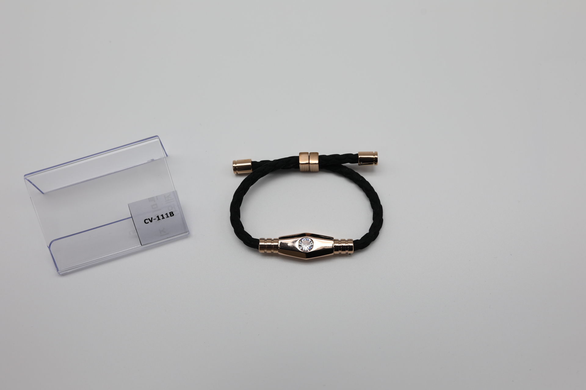
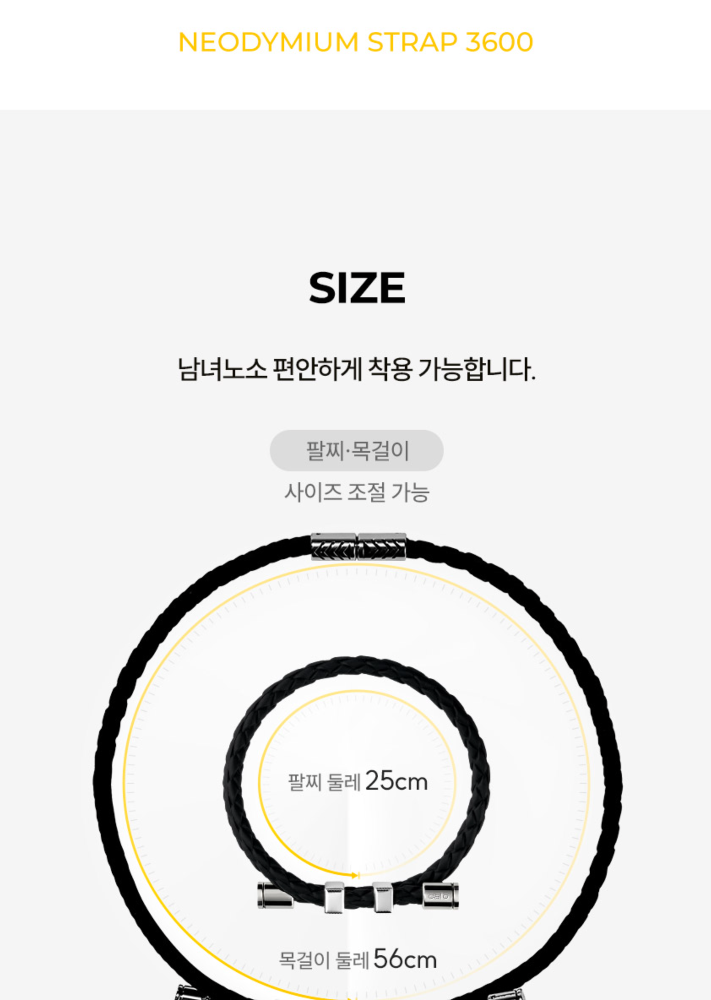

후킹 이미지
착용컷과 무드컷으로 손목 위에서 보이는 첫인상을 먼저 보여줍니다.



MOOD & WEARING CUT
착용 컷과 무드 컷은 제품이 손목에 걸렸을 때의 분위기를 먼저 전달합니다. 골프, 외출, 데일리 룩 안에서 자연스럽게 어울리는 장면을 중심으로 구성합니다.
PREMIUM DAILY BRACELET
공산품 팔찌는 효능보다 착용했을 때의 무드, 소재감, 스타일링 활용도가 먼저 보입니다. Janus와 Ares 라인은 손목 위에서 자연스럽게 드러나는 금속 마감과 실루엣을 중심으로 구매 이유를 만듭니다.
DETAIL CUT
클래스프, 각인, 금속 장식, 밴드 질감을 가까이 보여주면 제품의 완성도와 가격 설득력이 높아집니다.

MATERIAL & TRUST
팔찌는 장시간 피부에 닿는 제품입니다. 최종 판매 전 실제 소재, 도금, 무니켈 여부, 중량 정보는 제품별로 확인해 입력해야 합니다.
제품별 상세 소재와 알러지 관련 정보 확인 필요
도금 종류, 변색 안내, 사용 환경별 주의사항 확인 필요
옵션별 길이, 조절 가능 범위, 무게 확인 필요
WEARING SIMULATION
손목 두께, 피부톤, 스타일링 조합을 보여주면 사용자는 제품 크기와 분위기를 더 쉽게 상상할 수 있습니다.
제품의 실루엣과 메탈 포인트가 손목 위에서 어떻게 보이는지 보여줍니다.
시계, 반지, 다른 팔찌와 함께 착용했을 때의 조합을 제안합니다.
골프웨어, 셔츠, 니트처럼 실제 착장 안에서의 무드를 강조합니다.
SIZE GUIDE
팔찌는 사이즈 실패가 교환 문의로 이어지기 쉬운 제품입니다. 구매 전 손목 둘레를 잰 뒤 제품별 조절 범위를 확인해 주세요.

줄자 또는 종이를 사용해 손목 둘레를 잰 뒤, 착용감을 위해 여유분을 더해 선택합니다.
STORY & CONCEPT
클라비스 공산품 팔찌는 프리미엄 웰니스 무드를 가진 데일리 액세서리입니다. 제품의 기술적 배경은 과장하지 않고, 손목 위에서 보이는 디자인과 착용 경험을 중심으로 전달합니다.
CARE GUIDE
FAQ
교환/반품 가능 기간, 착용 흔적 기준, 왕복 배송비는 스마트스토어 최종 정책에 맞춰 안내가 필요합니다.
도금 제품은 사용 환경에 따라 변색될 수 있습니다. 물, 땀, 화장품, 향수 접촉을 줄이고 사용 후 건조 보관을 권장합니다.
이 페이지는 공산품 팔찌 기준입니다. 의료적 효능, 치료, 예방, 완화 표현으로 안내하지 않습니다.
WITH ITEM
Janus Necklace같은 무드의 목걸이 라인 Ares Necklace커플/세트 구성 제안
Ares Necklace커플/세트 구성 제안BRACELET LINE
Janus와 Ares는 공산품 기준의 프리미엄 팔찌 라인입니다. 컬러, 도금, 착용감, 스타일링 취향에 따라 선택할 수 있습니다.
CHECK BEFORE BUY
소재, 도금, 사이즈, 착용 흔적에 따른 교환/반품 기준은 최종 판매 정책에 맞춰 확인해 주세요.
피부에 닿는 밴드와 금속 장식의 소재, 알러지 관련 정보를 확인합니다.
손목 둘레를 측정하고 제품별 조절 가능 범위를 확인합니다.
도금 변색을 줄이기 위해 물, 땀, 향수 접촉 후 관리법을 확인합니다.